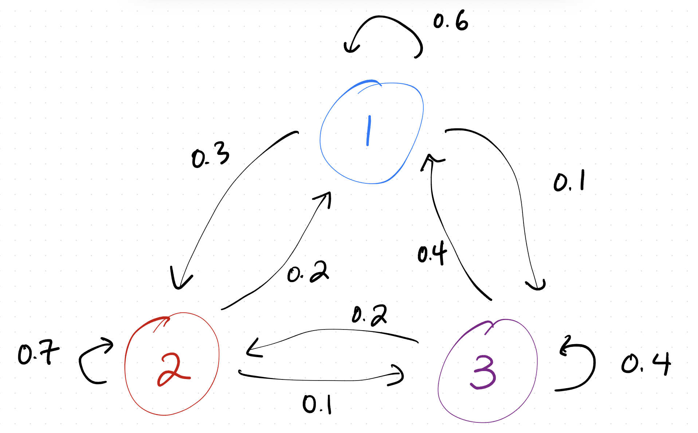
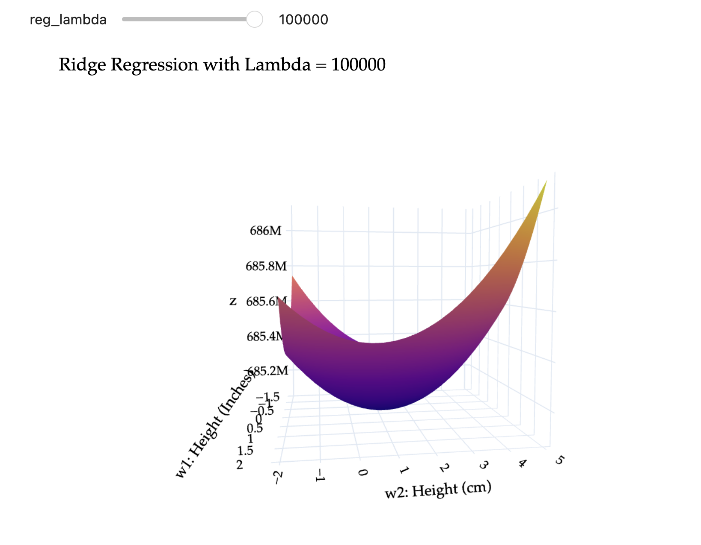
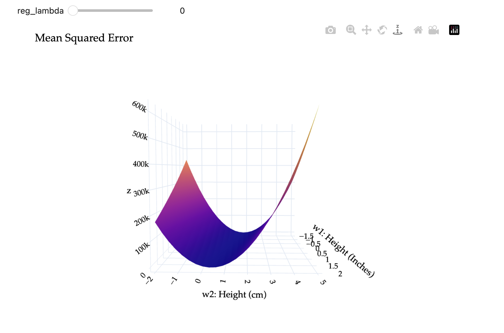

Write your solutions to the following problems either by writing them on a piece of paper or on a tablet and scanning your answers as a PDF. Note that you are not allowed to use LaTeX, Google Docs, or any other digital document creation software to type your answers. Homeworks are due to Gradescope by 11:59PM on the due date. See the syllabus for details on the slip day policy.
Homework will be evaluated not only on the correctness of your answers, but on your ability to present your ideas clearly and logically. You should always explain and justify your conclusions, using sound reasoning. Your goal should be to convince the reader of your assertions. If a question does not require explanation, it will be explicitly stated.
Note: Repeatedly, you’ll be asked to find eigenvalues and eigenvectors. As usual, you’re expected to show all of your work. But, you’re encouraged to verify your answers by using np.linalg.eig in Python, as is demonstrated in Chapter 9.1. (Resist the urge to use ChatGPT...)
Problem 1: Homework 9 Solutions Review (10 pts)
Review the solutions to Homework 9. Pick two problem parts (for example, Problem 2a and Problem 5c) from Homework 9 in which your solutions have the most room for improvement, i.e. where they have unsound reasoning, could be significantly more efficient or clearer, etc. Include a screenshot of your solution to each problem part, and in a few sentences, explain what was deficient and how it could be fixed.
Alternatively, if you think one of your solutions is significantly better than the posted one, copy it here and explain why you think it is better. If you didn’t do Homework 9, choose two problem parts from it that look challenging to you, and in a few sentences, explain the key ideas behind their solutions in your own words.
Solution
All of the problems in Homework 9 are important, but in particular, make sure you reviewed the solutions to the problems you didn’t attempt, since in Homework 9 you could have skipped some problems and still earned a full score.
Problem 2: Rank One Projection Matrices (10 pts)
Consider the unit vector \(\vec u = \begin{bmatrix} 1/6 \\ 1/6 \\ 3/6 \\ 5/6 \end{bmatrix}\), and the corresponding rank one projection matrix \(P = \vec u \vec u^T\).
a)
(3 pts) Show that \(\vec u\) is an eigenvector of \(P\). What is its corresponding eigenvalue?
Solution
$$ P \vec u = \vec u \vec u^T \vec u = \vec u (\vec u^T \vec u) = \vec u (1) = \vec u $$
So, \(\vec u\) is an eigenvector of \(P\) with eigenvalue 1.
b)
(3 pts) Show that if \(\vec v\) is orthogonal to \(\vec u\), then \(\vec v\) is an eigenvector of \(P\). What is its corresponding eigenvalue?
Solution
Given that \(\vec u \cdot \vec v = 0\), we have
$$ P \vec v = \vec u \vec u^T \vec v = \vec u (\vec u^T \vec v) = \vec u (0) = \vec 0 = 0 \vec v $$
So, \(\vec v\) is an eigenvector of \(P\) with eigenvalue 0.
c)
(4 pts) Find three different linearly independent eigenvectors of \(P\), all corresponding to the eigenvalue 0.
(In the terminology of Problem 4 and Chapter 5.2, these eigenvectors form a basis of the eigenspace of \(P\) corresponding to eigenvalue 0.)
Solution
To find three linearly independent eigenvectors of \(P\) with eigenvalue 0, we can find three vectors that are orthogonal to \(\vec u = \begin{bmatrix} 1/6 \\ 1/6 \\ 3/6 \\ 5/6 \end{bmatrix}\). The straightforward way to do this is to think of components that allow us to “cancel” out the entries in \(\vec u\).
For example, \(\vec v_1 = \begin{bmatrix} 1 \\ -1 \\ 0 \\ 0 \end{bmatrix}\) is orthogonal to \(\vec u\) because \(1 \cdot \frac{1}{6} + (-1) \cdot \frac{1}{6} + 0 \cdot \frac{3}{6} + 0 \cdot \frac{5}{6} = 0\).
Another option is \(\vec v_2 = \begin{bmatrix} 1 \\ 1 \\ 1 \\ -1 \end{bmatrix}\) because \(1 \cdot \frac{1}{6} + 1 \cdot \frac{1}{6} + (1) \cdot \frac{3}{6} + (-1) \cdot \frac{5}{6} = \frac{5}{6} - \frac{5}{6} = 0\). This \(\vec v_2\) also happens to be orthogonal to \(\vec v_1\), though that’s not a requirement of what we’re asked to find — we just need all three vectors we find to be linearly independent. And indeed, \(\vec v_2\) is not a scalar multiple of \(\vec v_1\).
A third option is \(\vec v_3 = \begin{bmatrix} 5 \\ 0 \\ 0 \\ -1 \end{bmatrix}\) because \(5 \cdot \frac{1}{6} + 0 \cdot \frac{1}{6} + 0 \cdot \frac{3}{6} + (-1) \cdot \frac{5}{6} = \frac{5}{6} - \frac{5}{6} = 0\).
Problem 3: Algebraic and Geometric Multiplicities (20 pts)
For each matrix below:
Find its characteristic polynomial in factored form.
State all eigenvalues along with their algebraic multiplicities.
For each eigenvalue, find a basis for the eigenspace corresponding to that eigenvalue, and state its geometric multiplicity.
Some advice:
There are multiple examples of what you’re asked to do in Chapter 9.4.
Recall the trace and determinant tricks from Chapter 9.2, and the fact that the determinant of an upper triangular matrix is the product of the diagonal entries.
Work efficiently: this problem is quicker than it seems.
$$ \begin{align*} \begin{bmatrix} 3 & 0 & 0 \\\\ 0 & 4 & 0 \\\\ 0 & 0 & 4 \end{bmatrix} \begin{bmatrix} a \\\\ b \\\\ c \end{bmatrix} = 3 \begin{bmatrix} a \\\\ b \\\\ c \end{bmatrix} \end{align*} $$
The first component implies \(3a = 3a\), or just \(a = a\), which tells us nothing about about \(a\) (this is always true). The second component implies \(4b = 3b \implies b = 0\). The third component implies \(4c = 3c \implies c = 0\). So, an eigenvector \(\vec v_1\) is \(\begin{bmatrix} 1 \\ 0 \\ 0 \end{bmatrix}\). Since any scalar multiple of \(\begin{bmatrix} 1 \\ 0 \\ 0 \end{bmatrix}\) is also an eigenvector for eigenvalue 3, we can write the eigenspace for \(\lambda_1 = 3\) as
$$ \begin{align*} \begin{bmatrix} 3 & 0 & 0 \\\\ 0 & 4 & 0 \\\\ 0 & 0 & 4 \end{bmatrix} \begin{bmatrix} a \\\\ b \\\\ c \end{bmatrix} = 4 \begin{bmatrix} a \\\\ b \\\\ c \end{bmatrix} \end{align*} $$
The first component implies \(3a = 4a \implies a = 0\). The second component implies \(4b = 4b \implies b = b\), which tells us nothing about \(b\), and the third component tells us \(c = c\), which tells us nothing about \(c\). So, as long as \(a = 0\), the vector \(\begin{bmatrix} 0 \\ b \\ c \end{bmatrix}\) is an eigenvector for eigenvalue 4. So, the eigenspace for \(\lambda_2 = 4\) is
(ii) The eigenvalues of \(A\) are \(\lambda_1 = 3\) with algebraic multiplicity 2.
(iii) We’re looking for \(\vec v\) such that \(A \vec v = 3 \vec v\).
$$ \begin{bmatrix} 3 & 1 \\\\ 0 & 3 \end{bmatrix} \begin{bmatrix} a \\\\ b \end{bmatrix} = 3 \begin{bmatrix} a \\\\ b \end{bmatrix} $$
The first component implies \(3a + b = 3a \implies b = 0\). The second component implies \(0a + 3b = 3b \implies b = b\), which tells us nothing about \(b\) or \(a\). Together, this gives us that eigenvectors of \(A\) for eigenvalue 3 are of the form \(\begin{bmatrix} a \\ 0 \end{bmatrix}\). So, the eigenspace for \(\lambda_1 = 3\) is
Without working out the formula for the determinant, we know that since \(A\) is upper triangular, its eigenvalues lie on its diagonal.
(ii) The eigenvalues of \(A\) are \(\lambda_1 = 2\) with algebraic multiplicity 2 and \(\lambda_2 = 3\) with algebraic multiplicity 1.
(iii) - For \(\lambda_1 = 2\), we’re looking for \(\vec v\) such that \(A \vec v = 2 \vec v\). Equivalently, \(\vec v\) is in the null space of \(A - 2I\).
Note that column 1 + column 2 + column 3 = \(\vec 0\), so the null space of \(A - 3I\) is spanned by \(\begin{bmatrix} 1 \\ 1 \\ 1 \end{bmatrix}\). So, the eigenspace for \(\lambda_2 = 3\) is
(ii) The eigenvalues of \(A\) are \(\lambda_1 = 5\) with algebraic multiplicity 2 and \(\lambda_2 = 3\) with algebraic multiplicity 2.
(iii) Instead of walking through the same tedious process as in the previous parts, let’s use some nice patterns in \(A\) to cut down our work.
For \(\lambda_1 = 5\), notice that the first column of \(A\) is just \(\begin{bmatrix} 5 \\ 0 \\ 0 \\ 0 \end{bmatrix}\), meaning \(A \begin{bmatrix} 1 \\ 0 \\ 0 \\ 0 \end{bmatrix} = 5 \begin{bmatrix} 1 \\ 0 \\ 0 \\ 0 \end{bmatrix}\). Also, notice that the last column of \(A\) is just \(\begin{bmatrix} 0 \\ 0 \\ 0 \\ 5 \end{bmatrix}\), meaning \(A \begin{bmatrix} 0 \\ 0 \\ 0 \\ 1 \end{bmatrix} = 5 \begin{bmatrix} 0 \\ 0 \\ 0 \\ 1 \end{bmatrix}\). So, the eigenspace for \(\lambda_1 = 5\) is
Since the null space of \(A - 5I\) is spanned by two vectors, the geometric multiplicity of \(\lambda_1 = 5\) is 2.
For \(\lambda_2 = 3\), notice the middle \(2 \times 2\) “block” of \(\begin{bmatrix} 3 & 1 \\ 0 & 3 \end{bmatrix}\), which is the same as the matrix studied in part b). That matrix had an eigenvalue of \(3\) with algebraic multiplicity 2, but a 1-dimensional eigenspace spanned by \(\begin{bmatrix} 1 \\ 0 \end{bmatrix}\). If we pad that vector with zeros at the start and end, we get an eigenvector for our new \(A\) with eigenvalue 3 as well. In other words, the eigenspace for \(\lambda_2 = 3\) is
Since the null space of \(A - 3I\) is spanned by two vectors, the geometric multiplicity of \(\lambda_2 = 3\) is 2. If this logic doesn’t make sense, you can always manually compute \(A - 3I = \begin{bmatrix} 2 & 0 & 0 & 0 \\ 0 & 0 & 1 & 0 \\ 0 & 0 & 0 & 0 \\ 0 & 0 & 0 & 2 \end{bmatrix}\) and find its null space; you’ll find that its one dimensional, and is spanned by \(\begin{bmatrix} 0 \\ 1 \\ 0 \\ 0 \end{bmatrix}\).
\(A\) is the \(5 \times 5\) identity matrix. Its characteristic polynomial is
$$ \text{det}(A - \lambda I) = (1 - \lambda)^5 $$
and it has a single distinct eigenvalue, \(\lambda = 1\) with algebraic multiplicity 5.
All vectors in \(\mathbb{R}^5\) are eigenvectors of \(A\) for eigenvalue 1. So, the eigenspace for \(\lambda_1 = 1\) is all of \(\mathbb{R}^5\), which is the span of any 5 linearly independent vectors in \(\mathbb{R}^5\), and the geometric multiplicity of \(\lambda_1 = 1\) is 5.
(4 pts) In each statement, fill in the blanks and provide a brief justification. Each answer is more than just one word or number.
\(A\) is diagonalizable if and only if it has ____ eigenvectors.
\(A\) is diagonalizable if and only if the geometric multiplicity of each eigenvalue is ____.
Solution
(i)\(A\) is diagonalizable if and only if it has \(\boxed{\textbf{\)n\( linearly independent}}\) eigenvectors.
If \(A\) has \(n\) linearly independent eigenvectors, then these eigenvectors can be placed in \(V\), and so \(A = V \Lambda V^{-1}\) is a valid diagonalization (where \(\Lambda\) is a diagonal matrix with the eigenvalues of \(A\) on the diagonal). If \(A\) does not have \(n\) linearly independent eigenvectors, then \(V\) cannot be invertible, and so \(A = V \Lambda V^{-1}\) is not a valid diagonalization.
(ii)\(A\) is diagonalizable if and only if the geometric multiplicity of each eigenvalue is \(\boxed{\textbf{equal to the algebraic multiplicity of that eigenvalue}}\).
If the geometric multiplicity of each eigenvalue is equal to its algebraic multiplicity, then in total, \(A\) has \(n\) linearly independent eigenvectors. The sum of the algebraic multiplicities of all eigenvalues is \(n\), and if the geometric multiplicity of each eigenvalue is equal to its algebraic multiplicity, then the sum of the geometric multiplicities of all eigenvalues is also \(n\), meaning the sum of the dimensions of each eigenspace is \(n\). But the eigenvectors for different eigenvalues are linearly independent, so this means we’d have \(n\) linearly independent eigenvectors, meaning \(A\) is diagonalizable.
b)
(10 pts) For each matrix \(A\) in Problem 3:
if it is diagonalizable, find matrices \(V\) and \(\Lambda\) such that \(A = V \Lambda V^{-1}\). (As we saw in Chapter 9.4, this matrix is constructed by placing the eigenvectors of \(A\) as the columns of \(V\) and the eigenvalues of \(A\) as the diagonal entries of \(\Lambda\). You should have already done most of the work for this; this problem is just a matter of organizing your work.)
if not, explain why it is not diagonalizable.
Solution
(i)\(A = \begin{bmatrix} 3 & 4 & 0 \\ 0 & 4 & 0 \\ 0 & 0 & 4 \end{bmatrix}\) is diagonalizable, since it has three linearly independent eigenvectors.
Matrices that are already diagonal are always diagonalizable; let \(V = I\).
(ii)\(A = \begin{bmatrix} 3 & 1 \\ 0 & 3 \end{bmatrix}\)is not diagonalizable, since it has only one linearly independent eigenvector. Equivalently, \(\lambda = 3\) has algebraic multiplicity 2 but geometric multiplicity of only 1.
(iii)\(A = \begin{bmatrix} 2 & 0 & 1 \\ 0 & 2 & 1 \\ 0 & 0 & 3 \end{bmatrix}\) is diagonalizable, since it has three linearly independent eigenvectors.
\(A\) represents the adjacency matrix of a Markov chain with three states; see Chapter 9.3 for details.
a)
(3 pts) Draw the corresponding state diagram for \(A\). Label the states 1, 2, and 3.
Solution

b)
(4 pts) Diagonalize \(A\) by finding matrices \(V\) and \(\Lambda\) such that \(A = V \Lambda V^{-1}\). Do this by hand, but then include a screenshot of numpy code that verifies that you found the correct \(V\) and \(\Lambda\).
Solution
Big picture, \(A\) has three eigenvalues, each with algebraic (and geometric) multiplicity 1. We need to find each eigenvalue, and one eigenvector for each eigenvalue, and then store our results in \(\Lambda\) and \(V\), respectively.
First, we need to find \(A\)’s eigenvalues. We could do this by finding \(A\)’s characteristic polynomial, let’s demonstrate another line of reasoning. Suppose \(A\)’s eigenvalues are \(\lambda_1, \lambda_2, \lambda_3\). Then,
Since \(A\) is an adjacency matrix (meaning that its columns sum to 1 and its entries are non-negative), its largest eigenvalue is \(\lambda_1 = 1\).
Together, its three eigenvalues must add to the trace, which is \(0.6 + 0.7 + 0.4 = 1.7\). So, \(\lambda_2 + \lambda_3 = 1.7 - 1 = 0.7\).
Together, its three eigenvalues must multiply to the determinant, which is
A quick guess-and-check verifies that \(\lambda_2 = 0.4\) and \(\lambda_3 = 0.3\) satisfy both conditions; \(\lambda_2 + \lambda_3 = 0.4 + 0.3 = 0.7\) and \(\lambda_2 \lambda_3 = 0.4 \cdot 0.3 = 0.12\).
So, \(A\)’s eigenvalues are \(\boxed{\lambda_1 = 1, \lambda_2 = 0.4, \lambda_3 = 0.3}\).
(This may not actually have been any less work than finding \(A\)’s characteristic polynomial since computing the determinant required a bunch of decimal arithmetic, but still, it’s a technique worth knowing.)
Now, for the eigenvectors.
For \(\lambda_1 = 1\), we’re looking for \(A \vec v_1 = \vec v_1\).
$$ \begin{align*} \begin{bmatrix} 0.6 & 0.2 & 0.4 \\\\ 0.3 & 0.7 & 0.2 \\\\ 0.1 & 0.1 & 0.4 \end{bmatrix} \begin{bmatrix} a \\\\ b \\\\ c \end{bmatrix} &= \begin{bmatrix} a \\\\ b \\\\ c \end{bmatrix} \\\\ 0.6a + 0.2b + 0.4c &= a \implies 0.4a - 0.2b - 0.4c = 0 \\\\ 0.3a + 0.7b + 0.2c &= b \implies 0.3a - 0.3b + 0.2c = 0 \\\\ 0.1a + 0.1b + 0.4c &= c \implies 0.1a + 0.1b - 0.6c = 0 \end{align*} $$
Note that subtracting the first and second equations gives the third equation; as we’d expect, there are infinitely many solutions to this system, and one of these three equations is redundant. Let’s arbitrarily choose \(c = 1\) and solve for the corresponding \(a\) and \(b\) in equations 1 and 2.
If \(b = \frac{10}{3}\), then \(a = \frac{10/3 + 2}{2} = \frac{8}{3}\). So, an eigenvector \(\vec v_1\) is \(\begin{bmatrix} 8/3 \\ 10/3 \\ 1 \end{bmatrix}\), or equivalently \(\boxed{\begin{bmatrix} 8 \\ 10 \\ 3 \end{bmatrix}}\). If we’d like this to be a probability vector, we can divide by the sum of the components to get \(\begin{bmatrix} 8/21 \\ 10/21 \\ 3/21 \end{bmatrix}\), but this is not necessary yet.
For \(\lambda_2 = 0.4\), let’s try another approach: we’re looking for \(\vec v\) in the null space of \(A - 0.4 I\).
Note that the first two columns of \(A - 0.4I\) are the same, so \((A - 0.4I) \begin{bmatrix} 1 \\ -1 \\ 0 \end{bmatrix} = \vec 0\). So, that’s one eigenvector: \(\boxed{\begin{bmatrix} 1 \\ -1 \\ 0 \end{bmatrix}}\).
For \(\lambda_3 = 0.3\), we’re looking for \(\vec v\) in the null space of \(A - 0.3 I\).
Note that the first column is the average of the second and third columns, meaning \(2 \cdot (\text{column 1}) - (\text{column 2}) - (\text{column 3}) = \vec 0\). This tells us that \(\boxed{\begin{bmatrix} 2 \\ -1 \\ -1 \end{bmatrix}}\) is an eigenvector for \(\lambda_3 = 0.3\).
Now we have all of the eigenvalues and eigenvectors we need to construct \(\Lambda\) and \(V\).
(3 pts) Compute \(A^{10}\) using the diagonalization you found in part b). Hint: You should not have to multiply ten matrices by hand: only three. State what the three matrices are, and then you can use numpy to actually multiply them. Include a screenshot of any code you write and its output.
where \(V = \begin{bmatrix} 8 & 1 & 2 \\ 10 & -1 & -1 \\ 3 & 0 & -1 \end{bmatrix}\) is the matrix from part b). Again, we can use numpy to compute this product.
Notice that the columns of the resulting matrix are nearly the same. Keep this in mind in the following parts.
d)
(3 pts) Let \(\vec x_0 = \begin{bmatrix} 0.6 \\ 0.3 \\ 0.1 \end{bmatrix}\) be an initial state vector. Using numpy, compute \(A^{10} \vec x_0\). Include a screenshot of any code you write and its output.
Solution
Using numpy (and our previous computation of \(A^{10}\)), we find that \(\vec x_{10} = A^{10} \vec x_0 = \boxed{\begin{bmatrix} 0.38096687 \\ 0.47617624 \\ 0.14285689 \end{bmatrix}}\).
(3 pts) As \(k \to \infty\), what does \(A^k \vec x_0\) converge to, and why? Make sure your answer references the diagonalization you found in part b).
Solution
As \(k \to \infty\), \(A^k \vec x_0\) converges to the eigenvector corresponding to the eigenvalue 1. In general, \(A^k \vec x_0\) converges to an eigenvector of \(A\) corresponding to its dominant eigenvalue (i.e. the eigenvalue with the largest absolute value), which is 1 here.
This happens because in \(A^k = V \Lambda^k V^{-1}\), as \(k \to \infty\), \(\Lambda^k\) converges to a diagonal matrix with 1 in the top-left corner and 0s everywhere else, meaning the only contribution to \(A^k \vec x_0\) is the first column of \(V\), which is \(\vec v_1\).
If we start off with a probability vector \(\vec x_0\), then \(A^k \vec x_0\) will converge to
which is a normalized version of \(\vec v_1 = \begin{bmatrix} 8 \\ 10 \\ 3 \end{bmatrix}\), which we found in part b). Indeed, these components are very close to those returned by \(A^{10} \vec x_0\) in the preceeding part.
Problem 6: Regularization (24 pts)
Suppose we’d like to perform multiple linear regression using the \(n \times (d+1)\) design matrix \(X\), observation vector \(\vec y \in \mathbb{R}^n\), and parameter vector \(\vec w \in \mathbb{R}^{d+1}\).
Instead of minimizing mean squared error to find \(\vec w^{\ast}\), suppose we’d like to minimize the following regularized objective function:
$$ R_\text{ridge}(\vec w) = \lVert \vec y - X \vec w \rVert^2 + \lambda \lVert \vec w \rVert^2 $$
where \(\lambda \geq 0\) is a constant. The \(+ \lambda \lVert \vec w \rVert^2\) term is called the regularization term.
The vector \(\vec w_\text{ridge}^{\ast}\) that minimizes \(R_\text{ridge}(\vec w)\) will be, in general, different than the vector \(\vec w^{\ast}\) that minimizes mean squared error without the added \(+ \lambda \lVert \vec w \rVert^2\) term, and will thus have a higher mean squared error on the training data.
But, it turns out that \(\vec w_\text{ridge}^{\ast}\)may make better predictions on unseen test data, if we choose \(\lambda\) carefully, by forcing the model to be simpler and less overfit to the training data. Let’s explore this idea in more depth.
a)
(6 pts) Find \(\nabla R_\text{ridge}(\vec w)\), the gradient of \(R_\text{ridge}(\vec w)\).
Hint: Most of the steps involved were done in Chapter 8.2, but you’ll need to redo the work yourself and extend it slightly.
Solution
First, simplify \(R_\text{ridge}(\vec w)\) to a form where we can easily take the gradient:
$$ \begin{align*} R_\text{ridge}(\vec w) &= \lVert \vec y - X \vec w \rVert^2 + \lambda \lVert \vec w \rVert^2 \\\\&=(\vec y - X \vec w)^T (\vec y - X \vec w) + \lambda(\vec w^T \vec w) \\\\&=(\vec y^T - (X \vec w)^T)(\vec y - X \vec w) + \lambda(\vec w^T \vec w) \\\\&=\vec y^T\vec y - \vec y^TX\vec w - (X\vec w)^T\vec y+ (X\vec w)^T(X\vec w) + \lambda(\vec w^T \vec w) \\\\&=\vec y^T\vec y - 2\vec w^T(X^T\vec y) + \vec w^T(X^TX)\vec w + \lambda(\vec w^T \vec w) \end{align*} $$
Now, take the gradient term by term:
$$ \begin{align*} \nabla R_\text{ridge}(\vec w) &=\nabla_{\vec w}(\vec y^T\vec y) - \nabla_{\vec w}(2\vec w^T(X^T\vec y)) + \nabla_{\vec w}(\vec w^T(X^TX)\vec w) + \nabla_{\vec w}(\lambda(\vec w^T \vec w)) \\\\&=0- 2X^T\vec y + 2X^TX\vec w + 2\lambda\vec w \\\\&=2X^TX\vec w + 2\lambda\vec w- 2X^T\vec y \end{align*} $$
b)
(3 pts) Find \(\vec w_\text{ridge}^{\ast}\), the vector that minimizes \(R_\text{ridge}(\vec w)\).
Hint: Your answer should be such that if \(\lambda = 0\), then \(\vec w_\text{ridge}^{\ast}\) is the same as the vector \(\vec w^{\ast}\) that minimizes mean squared error without the added \(+ \lambda \lVert \vec w \rVert^2\) term.
Solution
$$ \begin{align*} \nabla R_\text{ridge}(\vec w)&=\vec 0 \\\\ 2X^TX\vec w + 2\lambda\vec w- 2X^T\vec y &= \vec 0 \\\\ X^TX\vec w + \lambda\vec w- X^T\vec y &= \vec 0 \\\\ (X^TX+ \lambda I)\vec w &= X^T\vec y \\\\ \vec w_\text{ridge}^*&= \boxed{(X^TX+ \lambda I)^{-1}X^T\vec y} \end{align*} $$
If \(\lambda = 0\), then \(\vec w_\text{ridge}^{\ast} = (X^TX)^{-1}X^T\vec y\), which is exactly the usual least-squares solution.
One of the side benefits of adding this regularization term is that a unique solution for \(\vec w_\text{ridge}^{\ast}\) exists for all \(\lambda > 0\), even if \(X\) is not full rank. That’s a bold claim: let’s prove it.
c)
(4 pts) Prove that all of the eigenvalues of \(X^TX\) are non-negative. (This means that \(X^TX\) is positive semidefinite.)
Hint: Suppose \(\vec v_i\) is an eigenvector of \(X^TX\) with eigenvalue \(\lambda_i\). From there, if you get stuck, take a look at this seemingly unrelated proof from Chapter 5.4 for inspiration.
Solution
Suppose \(\vec v_i\) is an eigenvector of \(X^TX\) with eigenvalue \(\lambda_i\). Then,
$$ X^TX \vec v_i = \lambda_i \vec v_i $$
Multiplying both sides by \(\vec v_i^T\) on the left, we get
Above, this tells us that \(\lambda_i\) is equal to the result of dividing the squared length of one vector by the squared length of another vector. Since the squared length of a vector is always non-negative, this means \(\lambda_i \geq 0\). This logic applies to any and all of \(X^TX\)’s eigenvalues, so all of \(X^TX\)’s eigenvalues are non-negative. So, \(X^TX\) is positive semidefinite.
d)
(3 pts) Suppose \(\vec v_i\) is an eigenvector of \(X^TX\) with eigenvalue \(\lambda_i\). Show that \(\vec v_i\) is also an eigenvector of \(X^TX + \lambda I\). What is its corresponding eigenvalue?
Solution
Given that \(X^TX \vec v_i = \lambda_i \vec v_i\), we have
So, \(\vec v_i\) is an eigenvector of \(X^TX + \lambda I\) with eigenvalue \(\lambda_i + \lambda\). The effect of adding \(\lambda I\) to \(X^TX\) is to increase each eigenvalue of \(X^TX\) by \(\lambda\).
e)
(3 pts) Putting parts c) and d) together, why is it guaranteed that \(X^TX+ \lambda I\) is invertible for all \(\lambda > 0\), even if \(X\) is not full rank? (\(X^TX + \lambda I\) is said to be positive definite for all \(\lambda > 0\).)
Solution
Part c) told us that \(X^TX\) is positive semidefinite, meaning that all of its eigenvalues are non-negative. Part d) told us that the effect of adding \(\lambda I\) to \(X^TX\) is to increase each eigenvalue of \(X^TX\) by \(\lambda\). So, all of the eigenvalues of \(X^TX + \lambda I\) are positive; if some eigenvalues of \(X^TX\) were 0, now they’re \(0 + \lambda\) which is some positive number. This logic had nothing to do with whether \(X\) was full rank or not; it only relied on the fact that \(X^TX\) is positive semidefinite.
Since all of the eigenvalues of \(X^TX + \lambda I\) are positive, none of them are 0, and a matrix is invertible if and only if none of its eigenvalues are 0. So, \(X^TX + \lambda I\) is invertible for all \(\lambda > 0\).
f)
(5 pts) Now, let’s explore how adding the regularization term \(\lambda \lVert \vec w \rVert^2\) to the objective function affects the shape of the loss surface.
Open the the supplemental Jupyter Notebook we’ve created for Homework 10, which can either be found here in the course GitHub repository or here on DataHub.
This problem is not autograded. Instead,
Read through the entire walkthrough, all the way through the end of Problem 6f).
In this PDF, include a screenshot of the diagram with a slider, showing that you’ve moved it all the way to the right, at \(\lambda = 100000\).
In this PDF, include answers to both of the following questions:
Why is it called ridge regression?
How does the inclusion of the \(\lambda \lVert \vec w \rVert^2\) term change the convexity of the loss surface?
Solution
(i) Done!
(ii) Here’s what the loss surface looks like at \(\lambda = 100000\):

Compare that to when \(\lambda = 0\):

(iii) Ridge regression is given the name “ridge” regression because the inclusion of the \(\lambda \lVert \vec w \rVert^2\) term removes the ridge that exists in mean squared error when \(X\) is not full rank, as you see above when \(\lambda = 0\). There isn’t always a ridge; if \(X\) is full rank to begin with, then \(X^TX\) is already invertible, and so there’s no ridge to remove.
By including the \(\lambda \lVert \vec w \rVert^2\) term, we’re forcing the loss surface to be strictly convex rather than just convex. (It’s already convex, even without regularization, but there could be infinitely many minimizers — when regularizing, there is always a unique minimizer, \(\vec w_\text{ridge}^{\ast} = (X^TX + \lambda I)^{-1}X^T \vec y\).)
If you’d like to read more about regularization, and how we actually choose the value of \(\lambda\) in practice, read more from EECS 398 here.
Problem 7: PageRank (12 pts)
This problem involves writing code and submitting it to the Gradescope autograder. The goal of this problem is to allow you to implement Google’s PageRank algorithm in code and think through some of its pitfalls and variants.
There are two ways to access the supplemental Jupyter Notebook:
Option 1: Set up a Jupyter Notebook environment locally, use git to clone our course repository, and open homeworks/hw10/hw10.ipynb. For instructions on how to do this, see the Tech Support page of the course website.
Option 2: Click here to open hw10.ipynb on DataHub. Before doing so, read the instructions on the Tech Support page on how to use the DataHub.
This problem is entirely autograded; to receive credit for Problem 7 of this homework, you’ll need to submit your completed notebook to the autograder on Gradescope. Your submission time for Homework 10 is the latter of your PDF and code submission times.